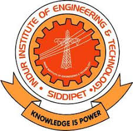
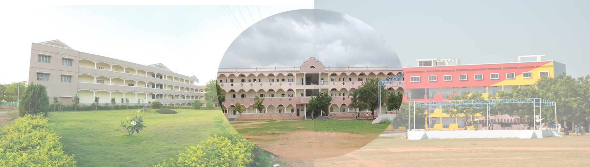

INDUR INSTITUTE OF ENGINEERING AND TECHNOLOGY::PONNALA SIDDIPET
Affiliated to jntuh Hyderabad
contact::952147622,9874561254

Welcome to Indur Institute of Engineering & Technology
Indur Institute of Engineering & Technology, Siddipet is an independent
educational establishment of excellence, geared up in its entirety to
transform individuals into top notch intellects by imparting top technical
education. Our unwavering commitment to Quality Education and Experiential
learning ensure that our students develop the abilities for creative&
innovative thoughts with critical thinking. Indur Institute of Engineering &
Technology,is a brainchild of INDUR Educational Society. The society was
founded in 1988 with a dresm to establish and nurture institutions of
excellence offering value based and quality education in Management, Arts,
Science, Engineering and Technology. The society has so far established
institutions of higher learning at Bodhan in Nizamabad District of Telangana
to conduct courses in Computer Science, Education and Vocational Training.
All these institutions have recorded excellent academic performance and are
relentlessly striving to stand of crowd. All the courses undertaken have
been duly approved by Director of Technical Education, Haryana and AICTE,
New Delhi.